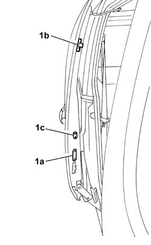
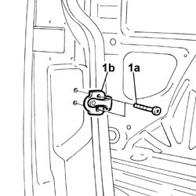
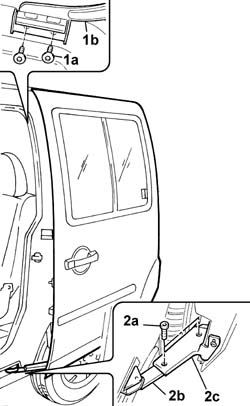
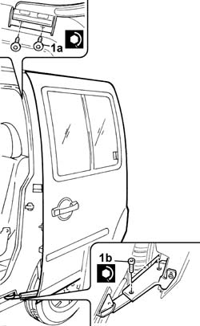
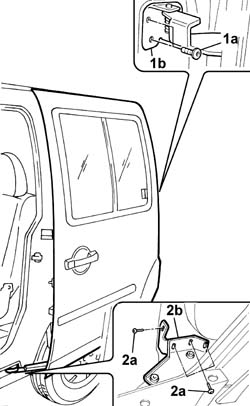
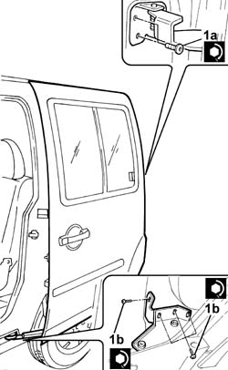

7020C04 sliding side door - adjustments for centring and profiling - includes seal adaptation if necessary
- Path
- Procedures > 70 FITTINGS > 7020 LOAD CARRYING COMPARTMENT DOORS > 7020C sliding side door > 7020C04 sliding side door - adjustments for centring and profiling - includes seal adaptation if necessary
- Kind
- repair procedure (removal / refitting; the operation number is the code)
- Applies to
- all engines; all production periods
- Interactive page
- https://sloeber94.github.io/elrnDB-fDbl/en/#/2585045
Applies to: all engines; all production periods
1. Undo the bolts securing the centring pins, bottom (1a) and top (1b), and the safety catch (1c).

Applies to: all engines; all production periods
To adapt the sliding side door to the door seal, carry out the operations described below.
1. Slacken the bolts (1a) securing the striker (1b).

Applies to: all engines; all production periods
1. Slacken the bolts (1a) securing the top runner (1b), door side.
2. Slacken the bolts (2a) securing the bottom runner (2b) and bracket on the door (2c).

Applies to: all engines; all production periods
1. Following adjustment, tighten the bolts (1a) and (1b) securing the top and bottom runners, and the lock striker bolt, to the specified torque.
 | Fastening | Component | Ø | Value (daNm) |
|---|---|---|---|---|
1a | Bolt | SLIDING DOOR ROLLER | M6 | 1.2 |
| Fastening | Component | Ø | Value (daNm) |
|---|---|---|---|---|
1b | Bolt | SLIDING DOOR ROLLER | M6 | 1.2 |
| Fastening | Component | Ø | Value (daNm) |
|---|---|---|---|---|
- | Bolt | SLIDING DOOR LOCK STRIKER | M8 | 2.4 |

Applies to: all engines; all production periods
To adjust the door height, carry out the following operations.
1. Slacken the bolts (1a) securing the central runner (1b).
2. Slacken the bolts (2a), on the door, securing the mounting bracket (2b) for the bottom runner.

Applies to: all engines; all production periods
1. After adjustment, tighten the bolts (1a) and (1b) securing the central runner and bottom runner mounting bracket to the specified torque.
| Fastening | Component | Ø | Value (daNm) |
|---|---|---|---|---|
1a | Bolt | SLIDING DOOR ROLLER | M6 | 1.2 |
| Fastening | Component | Ø | Value (daNm) |
|---|---|---|---|---|
1b | Bolt | SLIDING DOOR ROLLER | M6 | (door side) 2.4 |

Applies to: all engines; all production periods
At the end of each adjustment, tighten the bolts securing the top and bottom centring pins and the safety catch to the specified torque.
| Fastening | Component | Ø | Value (daNm) |
|---|---|---|---|---|
- | Bolt | SLIDING DOOR CENTRING PIN | M6 | (lower) 1.2 |
| Fastening | Component | Ø | Value (daNm) |
|---|---|---|---|---|
- | Bolt | SLIDING DOOR CENTRING PIN | M6 | (upper) 1.2 |
| Fastening | Component | Ø | Value (daNm) |
|---|---|---|---|---|
- | Bolt | DEVICE FOR HOLDING SLIDING DOOR OPEN | M6 | 1.2 |